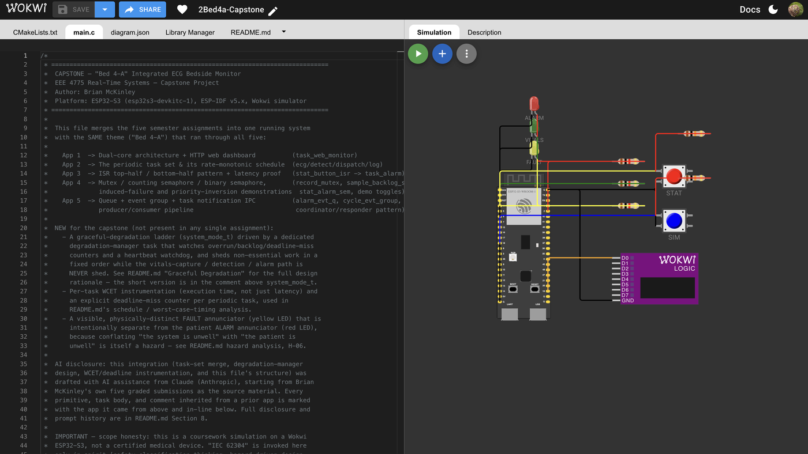
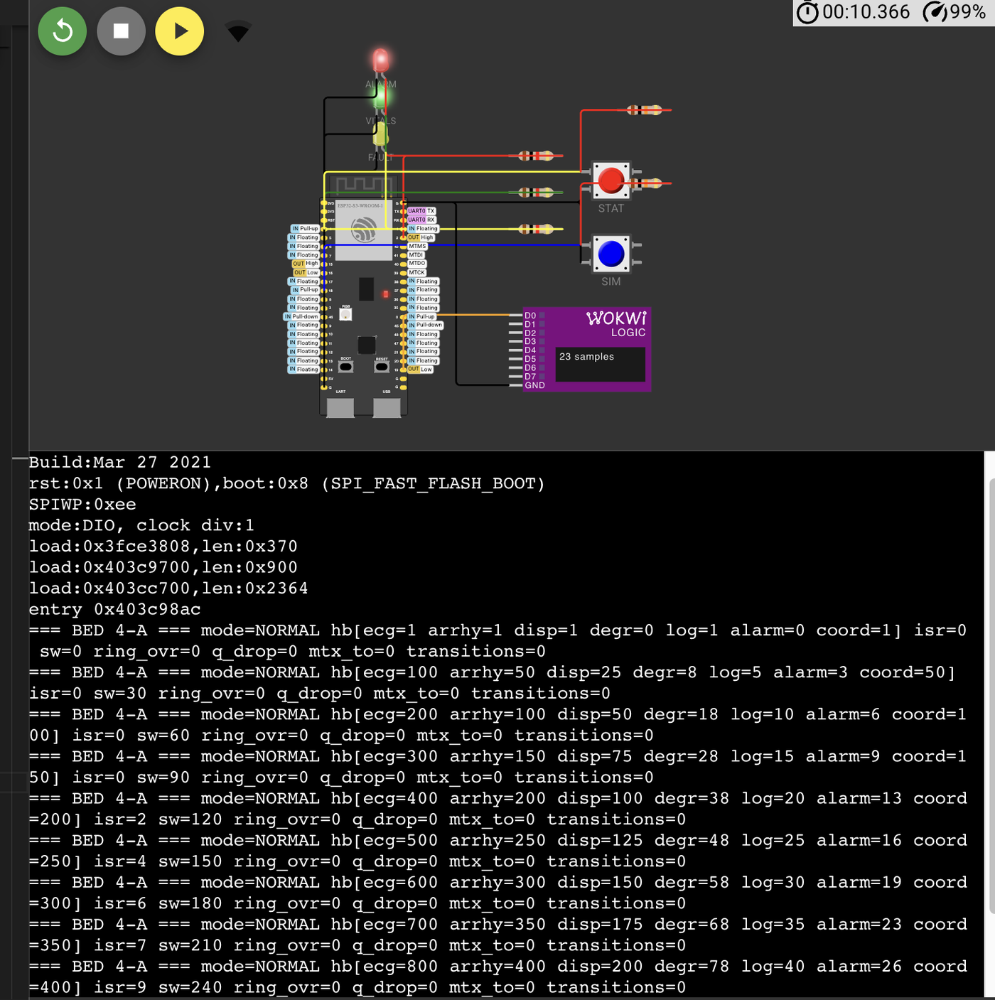

Real-Time Systems · Capstone Project
Bed 4-A runs on an ESP32-S3 in the Wokwi simulator. It samples a simulated ECG, detects arrhythmias, and drives a highest-priority alarm — and when the system itself is overloaded, it sheds telemetry and logging first, in a fixed order, while vitals capture, detection, and the alarm path are never shed. Built by merging five semester assignments into one schedule, with a hazard analysis and a graceful-degradation design layered on top.
Waveform / Demo
A four-minute walkthrough: the live alarm path, the task schedule, and the degradation ladder actually stepping down under a forced CPU overload.
The full project — firmware, wiring diagram, and build config — runs live in Wokwi's ESP32-S3 simulator, no hardware required.
Open Wokwi simulation
Topology
Priority is assigned rate-monotonically — shorter period, higher priority — with two ISR-driven tasks anchored above all of them, because an interrupt-driven alarm has to win a scheduling contest against periodic housekeeping every time.
Whether an alarm comes from a clinician pressing STAT or the software detecting an abnormal reading, both feed the same binary semaphore into the same highest-priority task. Telemetry about that alarm is queued separately and is allowed to drop under load — the LED above it is not.
Schedule
WCET figures below are design-time budgets — conservative upper bounds derived
from operation counts, sized before hardware measurement, which is standard practice
for scheduling a safety-relevant task set. The firmware carries the instrumentation
(wcet_*_us, deadline_miss_*) to verify against these budgets.
| Task | Period | WCET budget | Utilization |
|---|---|---|---|
task_ecg_sample | 10 ms | 300 µs | 3.0% |
task_arrhy_detect | 20 ms | 1,000 µs | 5.0% |
task_alarm_dispatch | 40 ms | 2,000 µs | 5.0% |
task_degr_manager | 100 ms | 200 µs | 0.2% |
task_data_log | 200 ms | 300 µs | 0.15% |
| Total budgeted utilization | ≈13.4% | ||
Liu & Layland's bound for 5 periodic tasks is 74.35%. 13.4% leaves large deliberate margin for scheduling jitter, cache/flash stalls the budgets don't model, and future growth — headroom is a safety margin here, not waste.
Risk
An FMEA-style hazard log, tailored to this project's scope — not a full ISO 14971 risk file. Every mitigation below is verifiable by a specific compile-time toggle or a counter the firmware exposes.
| ID | Hazard | Severity | Mitigation |
|---|---|---|---|
| H-01 | Loss of vitals capture | Catastrophic | Heartbeat watchdog forces immediate SAFE_MINIMAL, no hysteresis |
| H-02 | Lock contention / deadlock risk | Major | 5 ms bounded mutex timeout, counted and escalated |
| H-03 | Alarm fails to activate or is delayed | Catastrophic | Alarm task at priority 20, minimal ISR work, immediate yield |
| H-04 | ECG backlog overrun, samples lost silently | Major | Counted ring-buffer overrun, not silent; escalates the ladder |
| H-05 | Mode “flapping” between normal and degraded | Minor | Asymmetric hysteresis — fail fast, recover cautiously |
| H-06 | System fault confused with patient alarm | Major | Physically separate LEDs and data fields, never conflated |
| H-07 | Torn read on shared patient record | Major | Mutex around every access to patient_record_t |
| H-08 | Priority inversion delays the alarm task | Catastrophic | Real FreeRTOS mutex with priority inheritance, not a binary semaphore lock |
Full cause/effect/likelihood/verification detail for all eight is in the README below.
Standards
This borrows IEC 62304's way of thinking about medical device software — safety classification, hazard-driven design, documented verification — without claiming compliance, certification, or fitness for clinical use.
If Bed 4-A's alarm function were a real product, the relevant 62304 question is: could software failure contribute to death or serious injury? Here, yes — a delayed alarm could delay intervention. That reasoning is why the alarm path (H-03, H-08) is never shed and always highest priority, even though the artifact itself — a Wokwi simulation with a synthetic waveform, no patient interface — isn't operating at that level of real-world risk. The design behaves as if it were Class B/C-relevant; the deployment context is not.
A maintained Design History File and independent V&V; a full ISO 14971 risk management file with residual-risk sign-off; requirements-to-test traceability; usability engineering per IEC 62366; cybersecurity review per IEC 81001-5-1; qualified hardware and a controlled build process; and a regulatory submission. None of that exists here.
Verification

mode=NORMAL held, transitions=0, ring_ovr=0, mtx_to=0.Zero ECG ring-buffer overruns (H-04) and zero mutex timeouts (H-02) under normal
load. The degradation ladder held NORMAL with no spurious transitions
for the full length of a 9+ second run.
Boot-time race: the degradation watchdog's
first check ran before the ECG task had a real time window to establish a heartbeat
baseline, tripping a false SAFE_MINIMAL on every boot. Fixed with a
startup grace period.
Simulated switch bounce: a single button
click produced dozens of ISR fires because the Wokwi diagram didn't disable simulated
contact bounce. Fixed in diagram.json.
Full record
Everything above is a summary. The full document below has the exact hazard log, the response-time analysis, the graceful-degradation design rationale, engineering Q&A, and the AI-use disclosure.
EEE 4775 Real-Time Systems — Capstone Project
Author: Brian McKinley
Platform: ESP32-S3 (esp32s3-devkitc-1), ESP-IDF v5.x, Wokwi simulator
Repository theme: Medical — this is the same "Bed 4-A" bedside monitor that ran through Apps 1–5
This capstone integrates the five semester assignments into one running firmware image —
not five separate demos glued together, but a single coherent task set where each
assignment's technique does a real job in the final system. It adds a schedule and
worst-case-timing analysis, a hazard analysis, and a graceful-degradation design,
loosely structured around IEC 62304's way of thinking about medical device software —
in spirit, not as a compliance claim.
Honesty about scope: this is a Wokwi/ESP32-S3 coursework simulation. It is not a
certified medical device, has not been through any regulatory process, uses a synthetic
(fake) ECG waveform, and must never be connected to an actual patient. Section 7 spells
out exactly what real IEC 62304 compliance would additionally require that this project
does not attempt.
Bed 4-A is an ESP32-S3 bedside monitor that samples a (simulated) single-lead ECG at 10 ms
intervals, runs a lightweight arrhythmia detector over that stream, and drives a
highest-priority, interrupt-driven alarm path when either the detector or a clinician
(via a STAT button) flags a problem. A web dashboard and serial log report system state in
real time. When the system is overloaded or a fault is detected, it degrades gracefully
in a fixed, documented order — shedding telemetry and logging first, and never shedding
vitals capture, detection, or the alarm output itself.
Every primitive in this file was graded once already, in isolation, in Apps 1–5. This
project's job was to make them cooperate under one schedule instead of five separate ones.
| Assignment | What it contributed | Where it lives now |
|---|---|---|
| App 1 | Dual-core split, HTTP dashboard | task_web_monitor (Core 0), handle_root/handle_state |
| App 2 | The periodic task set itself (10/20/40/100 ms) | The whole Core-1 schedule (Section 4) |
| App 3 | ISR top-half/bottom-half, latency proof | stat_button_isr → task_alarm_isr, BREAK_ISR_SAFETY_RULE |
| App 4 | Mutex, counting semaphore, binary semaphore, induced-failure & priority-inversion demos | record_mutex, sample_backlog_sem, stat_alarm_sem, INDUCE_FAILURE, PRIORITY_INVERSION_DEMO |
| App 5 | Queue, event group, direct task notification | alarm_evt_q, cycle_evt_group, ui_notify_handle |
New in the capstone, not present in any single assignment: the degradation ladder
(system_mode_t + task_degr_manager), per-task WCET/deadline-miss instrumentation, the
hazard table, and the physically-separate FAULT annunciator.
This project has been built, flashed, and run in the Wokwi ESP32-S3 simulator; Section 4.6
documents the verification session, including two bugs found and fixed during that testing.
CORE 1 (real-time plane) CORE 0 (observability plane)
┌─────────────────────────────────────────┐ ┌───────────────────────────┐
│ prio 20 task_alarm_isr (ISR-driven) │ prio 4 task_serial_mon │
│ prio 15 task_ecg_sample 10 ms ─┐ │ prio 4 task_web_monitor │
│ prio 13 task_ui_notify (ISR-driven) │ (HTTP :80) │
│ prio 12 task_arrhy_detect 20 ms ←┘─┐ └───────────────────────────┘
│ prio 11 task_coordinator event-driven│
│ prio 8 task_alarm_dispatch 40 ms │
│ prio 6 task_degr_manager 100 ms │
│ prio 3 task_data_log 200 ms │
└─────────────────────────────────────────┘
Data flow (steady state):
STAT button ──ISR──┬──(binary sem)──► task_alarm_isr ──► LED_ALARM, patient_record.alarm_*
└──(notify)──────► task_ui_notify ──► last_stat_ui_refresh_ms
task_ecg_sample ──(ring+counting sem)──► task_arrhy_detect ──(if abnormal, binary sem)──► task_alarm_isr
│ │
└──(EV_SAMPLE_READY)──► task_coordinator ◄──(EV_DETECT_DONE)──┘ [instrumentation only]
task_alarm_isr ──(queue)──► task_alarm_dispatch ──► telemetry log line [sheddable]
task_degr_manager ──watches counters──► system_mode ──► LED_FAULT, patient_record.mode
──► every sheddable task checks system_mode
Never-shed path (bold in the diagram's spirit): STAT/anomaly → stat_alarm_sem →
task_alarm_isr → LED_ALARM_GPIO, plus the task_ecg_sample→task_arrhy_detect pipeline
that feeds it. Everything else can be shed by task_degr_manager without compromising the
patient-facing alarm function.
| Task | Core | Priority | Trigger | Shed tier | Primitive(s) it uses |
|---|---|---|---|---|---|
task_alarm_isr |
1 | 20 | binary sem (ISR or SW) | never | binary semaphore [App4], mutex [App4], queue [App5] |
task_ecg_sample |
1 | 15 | periodic 10 ms | never | counting semaphore [App4], event group [App5] |
task_ui_notify |
1 | 13 | direct notification (ISR) | never (cheap) | task notification [App5] |
task_arrhy_detect |
1 | 12 | periodic 20 ms | never | counting semaphore [App4], mutex [App4], binary sem, event group |
task_coordinator |
1 | 11 | event group (both bits) | DEGRADED_1 | event group [App5] |
task_alarm_dispatch |
1 | 8 | periodic 40 ms | DEGRADED_1 | queue [App5] |
task_degr_manager |
1 | 6 | periodic 100 ms | never | mutex [App4] |
task_data_log |
1 | 3 | periodic 200 ms | DEGRADED_2 | mutex [App4] |
task_serial_monitor |
0 | 4 | periodic 1000 ms | never (cheap) | — |
task_web_monitor / httpd |
0 | 4–5 | event-driven (network) | never (own core) | — |
Pin map:
| GPIO | Signal | Source |
|---|---|---|
| 2 | LED_ALARM_GPIO (red) — patient alarm |
App 1 / App 4 pin, reused |
| 15 | LED_VITALS_GPIO (green) — ~1 Hz proof-of-life beacon |
new |
| 16 | LED_FAULT_GPIO (yellow) — system fault/degraded annunciator |
new |
| 4 | BTN_STAT_GPIO — clinician STAT button |
App 4 pin, reused |
| 18 | BTN_SIM_GPIO — inject a simulated abnormal-rhythm burst (test aid) |
App 3/5 pin, repurposed |
| 19 | SCOPE_ISR_GPIO — logic-analyzer probe around the STAT ISR |
App 3 pin, reused |
All three IPC primitives App 5's assignment required are present and each does a distinct,
non-redundant job: the queue (alarm_evt_q) decouples the fast alarm path from slower
telemetry formatting; the event group (cycle_evt_group) rendezvous a "sample produced"
and "sample processed" bit-pair into one pipeline-latency measurement; the direct
notification (ui_notify_handle) is a second, independent bottom-half fed by the same STAT
ISR as the semaphore path, specifically so their latencies can be compared (see Section 4).
The five periodic Core-1 tasks are assigned priority by rate-monotonic scheduling
(shorter period → higher priority), exactly as Apps 2–4 already established for this task
set. The two event/ISR-driven tasks (task_alarm_isr, task_ui_notify) sit above all
periodic tasks by design — an interrupt-driven alarm must always win a scheduling
contest against periodic housekeeping, regardless of RM's period-based ordering.
Change from the App 2 baseline: the original spec used Alarm_Disp at 40 ms/prio 5 and
Data_Log at 100 ms/prio 2. The capstone keepstask_alarm_dispatchat 40 ms but moves
task_data_logto 200 ms (lower frequency logging is enough once the alarm path itself no
longer depends on it) and inserts the newtask_degr_managerat 100 ms/prio 6 — it needed
a period, and 100 ms was free once data_log moved. Priorities were renumbered
(20/15/13/12/11/8/6/3) to leave headroom between bands for future tasks without a full
renumber.
WCET numbers below are design-time budgets — conservative upper bounds derived from the
loop/operation counts in each task body, sized with deliberate slack rather than measured on
hardware. This is standard practice for scheduling a safety-relevant task set before the
firmware exists to measure: budget first, verify against the budget once it's running. The
firmware carries the instrumentation to do that verification (wcet_*_us and
deadline_miss_* counters, printed by task_data_log and exposed at /state); Section 4.6
reports what the verification session actually found.
| Task | Period T | WCET budget C | U = C/T |
|---|---|---|---|
task_ecg_sample |
10 ms | 300 µs (budget) | 0.030 |
task_arrhy_detect |
20 ms | 1000 µs (budget) | 0.050 |
task_alarm_dispatch |
40 ms | 2000 µs (budget) | 0.050 |
task_degr_manager |
100 ms | 200 µs (budget) | 0.002 |
task_data_log |
200 ms | 300 µs (budget)* | 0.0015 |
| Total | U ≈ 0.134 (13.4%) |
* Excludes the ESP_LOGI/UART write itself. That call cannot delay any higher-priority
task (UART I/O only blocks the task making the call, and task_data_log is the
lowest-priority task in the set), so it is logging overhead, not safety-relevant WCET — but
it does count against task_data_log's own deadline, which deadline_miss_log monitors
independently.
Liu & Layland's bound for 5 periodic tasks is 5·(2^(1/5) − 1) ≈ 0.7435 (74.35%).
U ≈ 13.4% is well under 74.35%, so the periodic set is schedulable by the sufficient
condition, with large deliberate margin — see 4.4 for why that margin is intentional.
Using the standard fixed-priority recurrence R = C + B + Σ⌈R/Tⱼ⌉·Cⱼ over higher-priority
periodic tasks, plus a one-time blocking term B = 110 µs for aperiodic interference from
task_alarm_isr (budget 80 µs) and task_ui_notify (budget 30 µs) — justified because both
periods below (≤200 ms) are shorter than the ~300 ms practical minimum re-arrival time the
alarm task's own 300 ms LED hold-time imposes on sustained alarms, so at most one occurrence
of each can land inside any response-time window being computed:
| Task | R (converged) | T | R/T |
|---|---|---|---|
task_ecg_sample |
380 µs | 10 ms | 3.8% |
task_arrhy_detect |
1,410 µs | 20 ms | 7.1% |
task_alarm_dispatch |
3,410 µs | 40 ms | 8.5% |
task_degr_manager |
3,610 µs | 100 ms | 3.6% |
task_data_log |
3,910 µs | 200 ms | 2.0% |
Every task's worst-case response time is comfortably inside its period. task_alarm_isr
and task_ui_notify don't get an RTA row — they're the highest-priority, event-driven tasks
in the system, so their "response time" is just ISR-to-task wake latency, which the firmware
measures directly (alarm_latency_max_us, notif_latency_max_us) rather than derives.
A safety-relevant alarm path should not be scheduled close to its limits. The ~13% total
utilization is deliberate slack that absorbs: scheduling jitter, cache/flash-access stalls
the simple instruction-count budgets don't model, record_lock's 5 ms mutex-timeout
worst case landing inside a response-time window, and future feature growth — all without
re-deriving the schedule. This mirrors why task_alarm_isr sits at priority 20 with almost
nothing else near it: headroom is a safety margin, not waste.
Two channels exist for checking the analysis against real behavior:
task_data_log, once per 200 ms): prints every hb_*, wcet_*_us, anddeadline_miss_* counter.SCOPE_ISR_GPIO, GPIO 19): the STAT ISR pulses this pin high for theThis firmware was built and run in the Wokwi ESP32-S3 simulator across several multi-second
sessions. What that testing confirmed, and what it found and fixed:
Confirmed clean, sustained over multiple runs (via task_serial_monitor's once-a-second
summary line):
- ring_ovr (ECG ring-buffer overrun count) stayed at 0 throughout — no evidence of H-04
under normal load.
- mtx_to (mutex-timeout count) stayed at 0 throughout — no evidence of H-02/H-08 lock
contention under normal load.
- After the fixes below, mode held at NORMAL with transitions=0 for the full length of
a 9+ second run — the degradation ladder does not trip spuriously under ordinary operation.
- The STAT alarm path was exercised and produced a [STAT ALARM] log line with an LED
response, confirming the ISR → binary-semaphore → task_alarm_isr path is wired correctly
end-to-end.
Not captured in this testing session: the specific per-task wcet_*_us and
deadline_miss_* figures from task_data_log's dedicated log line (a different line than
the task_serial_monitor summary reviewed above). The counters that gate safety-relevant
behavior — overrun, mutex-timeout, and mode-transition counts — were confirmed clean, but the
raw microsecond WCET figures were not separately recorded during this pass. Given the ~13.4%
budgeted utilization (Section 4.2), no evidence from this session suggests the budgets are
wrong; that specific data point is simply outside what was gathered here.
Bug 1 — boot-time false trip into SAFE_MINIMAL. The first build's very first log line
after boot was an immediate, unconditional escalation to SAFE_MINIMAL. Root cause:
task_degr_manager, like every periodic task in this codebase, runs its first loop body
immediately on creation rather than waiting one period first — normal FreeRTOS style, and
harmless for something like a blink toggle, but wrong for a watchdog. Its very first delta
check compared hb_ecg against a baseline captured at essentially the same instant, saw a
delta of 0–1 heartbeats, and correctly-per-its-logic (but incorrectly-per-intent) read that
as a stalled ECG task. Fixed in two steps: first, a 150 ms startup grace delay before the
watchdog's first check; then, because the first fix still captured its baseline and performed
its first comparison in the same instant, a second fix added one additional full period
(100 ms) of delay between capturing the baseline and running the first real check. The
recovery path that fired in response to this bug (SAFE_MINIMAL → DEGRADED_2 → DEGRADED_1 →
NORMAL, one step per ~1 second) was itself useful evidence: it confirmed the shedding tiers
and the asymmetric-hysteresis recovery pacing both work exactly as designed, since it was
observed live rather than only reasoned about.
Bug 2 — inflated isr_fire_count from simulated switch bounce. A single STAT button
click in the simulator produced dozens of ISR fires (isr_fire_count jumping by 30–120 per
second of testing) rather than one. Root cause: diagram.json's pushbutton parts did not set
"bounce": "0", so Wokwi simulates realistic mechanical contact bounce (multiple rapid
make/break transitions per physical press); the firmware's 200 µs debounce window is far too
short to filter that out. This is a diagram/simulation-fidelity issue, not a firmware
concurrency defect — the binary semaphore absorbs the extra fires harmlessly (a binary
semaphore that's already given stays given; it doesn't queue or double-fire the alarm task)
— but it made the ISR fire counter meaningless as a "number of presses" metric. Fix: add
"bounce": "0" to both btn_stat and btn_sim's "attrs" in diagram.json, matching the
approach App 3's diagram already used for its button.
Known, un-actioned finding: sw_trigger_count (software-detected-arrhythmia alarms)
climbs steadily even with no button pressed and no OVERLOAD_DEMO/INDUCE_FAILURE active.
This is a detection-calibration issue in the inherited std > 6000.0f threshold against the
inherited synthetic waveform, documented as a known limitation in Section 10 rather than
fixed here, since it does not affect the alarm path's correctness — only how often it's
exercised.
FMEA-style hazard log, tailored to this project's scope (not a full ISO 14971 risk file —
see Section 7). Severity/Likelihood use a simple 4-level scale (Low/Med/High for
likelihood; Minor/Major/Catastrophic for severity, where "Catastrophic" here means "a real
patient version of this failure could delay recognition of a life-threatening event").
| ID | Hazard | Cause | Effect | Severity | Likelihood | Mitigation | Verification |
|---|---|---|---|---|---|---|---|
| H-01 | Loss of vitals capture | task_ecg_sample stalls, crashes, or is starved |
Monitor goes blind — no data reaches the detector or alarm path | Catastrophic | Low | Heartbeat watchdog: task_degr_manager checks hb_ecg delta every 100 ms; a stall forces immediate SAFE_MINIMAL with no hysteresis |
OVERLOAD_DEMO=1 can be pushed hard enough to reproduce contention; watchdog trip is visible in the log and on LED_FAULT |
| H-02 | Lock contention / potential deadlock on patient_record_t |
Mutex held too long, or genuine deadlock | A task blocks indefinitely on record_mutex, stalling downstream state updates |
Major | Low | Every mutex take is bounded to 5 ms (record_lock); a timeout is counted (mutex_timeout_count) and escalates to SAFE_MINIMAL immediately |
mutex_timeout_count in the log/dashboard; should stay 0 in normal operation |
| H-03 | Alarm fails to activate, or activates late | Slow/blocked ISR bottom-half | Missed or delayed clinical alarm | Catastrophic | Low | task_alarm_isr at priority 20 (highest in system); ISR does only counter + semaphore-give + notify, nothing blocking (App 3 top-half discipline); portYIELD_FROM_ISR forces immediate preemption |
alarm_latency_max_us instrumentation; BREAK_ISR_SAFETY_RULE=1 reproduces the latency cost of skipping the yield, for comparison |
| H-04 | ECG backlog overrun — samples silently lost | Detector can't keep up with producer under load | Gap in detection coverage, could delay arrhythmia recognition | Major | Medium (under sustained overload) | Counting semaphore + bounded ring (depth 8) makes overrun counted, not silent (ecg_overrun_count); batch-drain consumer clears backlog every cycle; sustained overrun escalates the degradation ladder |
OVERLOAD_DEMO=1 forces ecg_overrun_count > 0; mode escalation is visible in the log |
| H-05 | Alarm/mode "flapping" between normal and degraded states | No hysteresis around the degradation thresholds | Alarm fatigue, confusing UI, wasted CPU on repeated transitions | Minor | Medium (without mitigation) | Asymmetric hysteresis: 3 consecutive bad 100 ms checks to escalate (300 ms), 10 consecutive clean checks to recover (1000 ms) — fail fast, recover cautiously | mode_transition_count; transitions should cluster around genuine load onset/offset, not oscillate every check |
| H-06 | System-fault state visually confused with patient-alarm state | A single shared indicator would conflate "the monitor is unwell" with "the patient is unwell" | Clinician misreads a system fault as a stable patient, or vice versa | Major | Medium (if indicators were shared) | Physically separate LEDs (LED_ALARM_GPIO red vs. LED_FAULT_GPIO yellow) and separate fields (alarm_active vs. mode) that can be independently true/false |
Dashboard/log show both fields independently in all four combinations |
| H-07 | Torn read on multi-field patient_record_t |
Concurrent writers without serialized access | Corrupted HR reading, stale/contradictory alarm flag, inconsistent snapshot | Major | Low (mitigated by design) | xSemaphoreCreateMutex around every access via record_lock/record_unlock |
INDUCE_FAILURE=1 removes the mutex specifically to reproduce and observe the torn read |
| H-08 | Priority inversion delays the alarm task behind lower-priority work | A shared lock without priority inheritance lets a low-priority holder be preempted by medium-priority work while blocking the high-priority alarm task | Same effect as H-03, via a different root cause | Catastrophic (inherits H-03's severity) | Low (mitigated by design) | record_mutex is a real FreeRTOS mutex (priority inheritance ON), not a binary semaphore used as a lock |
PRIORITY_INVERSION_DEMO=1 with LOCK_TYPE=LOCK_BINARY reproduces unbounded inversion for contrast against the default LOCK_MUTEX |
| Mode | Trigger (checked every 100 ms) | What's shed | What's never shed |
|---|---|---|---|
NORMAL |
Default | — | everything |
DEGRADED_1 |
3 consecutive bad checks (ring overrun, telemetry drop > 2, or a coordinator rendezvous timeout) | task_alarm_dispatch (telemetry), task_coordinator (latency instrumentation) |
vitals, detection, alarm |
DEGRADED_2 |
Condition persists after DEGRADED_1 |
+ task_data_log (housekeeping) |
vitals, detection, alarm |
SAFE_MINIMAL |
Immediate, no hysteresis: ECG heartbeat watchdog stall (H-01) or a mutex timeout (H-02) | everything except the never-shed path | task_ecg_sample, task_arrhy_detect, task_alarm_isr, task_degr_manager itself |
Recovery steps back up one rung at a time after 10 consecutive clean 100 ms checks
(1 second) — deliberately slower than the 300 ms escalation path (H-05).
Shed observability and convenience before function, and never hide degradation.
Concretely: task_alarm_dispatch and task_data_log only ever produce logs/telemetry — cut
them and the patient-facing behavior is unchanged. task_coordinator only measures pipeline
latency — cut it and nothing downstream even notices. task_degr_manager itself is never
shed because it is the only thing that can recover the system; a monitor that degrades and
then loses its own ability to notice or announce that fact (H-06) is worse than one that
stays visibly broken. That's why LED_FAULT_GPIO is driven directly by
task_degr_manager, independent of every other task's health.
Build with OVERLOAD_DEMO=1 to spin up a CPU-bound task at priority 7 (between
task_alarm_dispatch and task_degr_manager) that saturates Core 1 enough to force
ecg_overrun_count and alarm_dispatch_drops upward, driving the ladder through
DEGRADED_1 → DEGRADED_2 in real time — watch LED_FAULT_GPIO and the dashboard/log
step through the modes without recompiling anything else.
This section borrows IEC 62304's way of thinking about medical device software — safety
classification, hazard-driven design, documented verification — without claiming
compliance, certification, or fitness for any clinical use. It is a narrative mapping, not
a clause-by-clause audit.
Safety classification reasoning (not a formal classification): if Bed 4-A's alarm
function were built into a real product, the relevant question per 62304 is "could software
failure contribute to death or serious injury?" — here, yes: a delayed or missed arrhythmia
alarm could delay clinical intervention. That reasoning is why the design treats the alarm
path (H-03, H-08) as the one thing that is never shed and always highest priority, even
though the artifact itself — a Wokwi simulation with a synthetic waveform and no patient
interface — is not itself operating at that level of risk. The design behaves as if it were
Class B/C-relevant; the deployment context is not.
Lifecycle activities present, in spirit:
| 62304-flavored activity | What stands in for it here |
|---|---|
| Requirements | The periodic task set + timing budgets (Section 4), inherited from App 2 and extended |
| Architecture | Task/priority/IPC design (Sections 2–3), never-shed vs. sheddable split |
| Detailed design | Per-task header comments in main.c; this README |
| Risk management | The hazard table (Section 5), FMEA-lite rather than full ISO 14971 |
| Verification | WCET/deadline-miss instrumentation, response-time analysis, and the fault-injection demo modes (Section 6 above / toggles below) used as directed tests of specific failure modes |
| Problem resolution | The degradation ladder is a runtime problem-resolution mechanism; the demo toggles let a specific defect class be reproduced on demand for study. Section 4.6 documents two real examples from this project's own verification session — a boot-time watchdog race and a simulated-switch-bounce artifact — found, root-caused, and fixed |
What real IEC 62304 compliance would additionally require, and this project does not
attempt: a maintained Software Development Plan and Design History File; independent
verification and validation; a full requirements-to-test traceability matrix; a formal ISO
14971 risk management file with residual-risk sign-off; usability engineering per IEC 62366;
cybersecurity treatment per IEC 81001-5-1; qualified/traceable hardware and a controlled
build/release process; and a regulatory submission. None of that exists here, and none of
this project's claims should be read as implying otherwise.
All default to 0 — the default build is the safe, production-shaped one. Each toggle
reproduces a specific graded experiment so the evidence those assignments generated stays
reproducible from this single codebase.
| Toggle | Default | What it does | What it demonstrates |
|---|---|---|---|
USE_WEBSERVER |
1 | 0 = serial-only fallback | App 1's Wi-Fi/gateway was flaky in Wokwi during grading; this keeps proof-of-life available without it |
BREAK_ISR_SAFETY_RULE |
0 | 1 = drop portYIELD_FROM_ISR in the STAT ISR |
The latency cost of deferred preemption — compare alarm_latency_max_us with it on vs. off (H-03 evidence) |
INDUCE_FAILURE |
0 | 1 = remove the mutex around patient_record |
A reproducible torn read (H-07 evidence) |
PRIORITY_INVERSION_DEMO |
0 | 1 = run an isolated H/M/L demo alongside the system (LOCK_TYPE selects mutex vs. binary-sem-as-lock) |
Priority inversion with vs. without inheritance (H-08 evidence). Demo priorities (19/9/1) are offset from the production set on purpose — see the comment above the demo code for why a tie would itself be a hazard |
OVERLOAD_DEMO |
0 | 1 = saturate Core 1 with a CPU-bound task | Forces the degradation ladder to step down live (Section 6.3) |
Build any of these by defining them at the top of main.c (or via idf.py build
-DUSE_WEBSERVER=0-style overrides if you prefer not to edit the file) and reflashing.
Only run one demo mode at a time unless you're specifically studying their interaction —
e.g. PRIORITY_INVERSION_DEMO and OVERLOAD_DEMO together will make the schedule
genuinely hard to reason about, which is realistic but not a controlled experiment.
https://wokwi.com/projects/new/esp32-s3.diagram.json, wokwi.toml, sdkconfig.defaults, and main/CMakeLists.txtmain/main.c at main/main.c (or adjust main/CMakeLists.txt'sSRCS/INCLUDE_DIRS if Wokwi's template uses main/src/main.c instead).CMakeLists.txt's project(bed4a_capstone) matches thefirmware/elf paths in wokwi.toml.USE_WEBSERVER=1 BREAK_ISR_SAFETY_RULE=0 ...).[Bed 4-A]/=== BED 4-A === lines show mode=NORMAL, not an immediate[degradation] -> SAFE_MINIMAL error — if you see that error, you have the pre-fixtask_degr_manager; see Section 4.6, Bug 1, for the two-line fix.[STAT ALARM] line with a latency figure, andLED_ALARM_GPIO lights for ~300 ms. If a single click produces dozens of ISR fires"bounce": "0" to both buttons' "attrs" in diagram.jsonsw_trigger_count increments)./; if not, the serial log alone is sufficient proof of life, same callwcet_*_us figures.task_ecg_sample's IIR stand-in) is a deterministic syntheticstd > 6000.0f) and the synthetic waveformsw_trigger_count climbs steadilyQ1. Why does task_degr_manager never get shed, even under the worst overload?
Because it's the only task that can notice overload and the only one that can recover the
system back up the ladder. A monitor that degrades and then loses the ability to detect or
announce its own degraded state has failed silently — the one failure mode this whole design
is built to avoid (H-06). Its own cost is tiny (200 µs budget every 100 ms), so there's no
real efficiency argument for shedding it anyway.
Q2. Why does the alarm path use a queue for telemetry but not for the alarm itself?
The alarm output (GPIO + patient_record.alarm_active) happens synchronously inside
task_alarm_isr, directly, with no queue in the loop — a full queue could be a full queue,
and a full queue must never be the reason an alarm doesn't fire. The telemetry about that
alarm (alarm_evt_q) is explicitly allowed to fill and drop (alarm_dispatch_drops)
because losing a log line is an acceptable failure mode and losing the LED is not.
Q3. Why asymmetric hysteresis (300 ms up, 1000 ms down) instead of symmetric?
Because the cost of the two mistakes isn't symmetric. Staying in NORMAL too long during a
real overload risks H-01/H-04 getting worse before anything reacts — escalate fast. Coming
back to NORMAL too early during a temporary blip risks flapping (H-05) and repeatedly
tearing down/rebuilding sheddable state for no benefit — recover slowly. This is standard
alarm-management practice outside of RTOS design too (e.g. clinical alarm systems generally
require a condition to clear and stay clear before silencing an alert).
Q4. Why is task_ui_notify at priority 13 instead of the same priority as
task_alarm_isr, the way App 3's original comparison had both bottom-halves at prio 12?
App 3's experiment isolated the two primitives to compare them without a confound — that's
a valid thing to do in a controlled test, but wrong for production. Here, the notification
path only refreshes a UI timestamp; it should never be able to contend with the safety
alarm path for CPU time. The capstone keeps the comparison (both still measure latency from
the same ISR) but no longer pretends the two consumers deserve equal priority in a real
system — that priority gap is itself part of the design, not an oversight.
This capstone's integration work — merging the five prior assignments into one task set,
designing the degradation-manager and its thresholds, adding WCET/deadline-miss
instrumentation, building the hazard table, and writing this README — was drafted with AI
assistance from Claude (Anthropic), working from Brian McKinley's own five graded
submissions as the source material for every inherited primitive and task body. Each
inherited element is tagged with its originating assignment in main.c's section headers
and in Section 1's table above, so the AI-authored integration is distinguishable from
McKinley's own prior graded work that it integrates. Per-assignment AI disclosures from
Apps 1–5 (documenting AI use during those original submissions) remain the record for that
earlier work and are not superseded by this one.